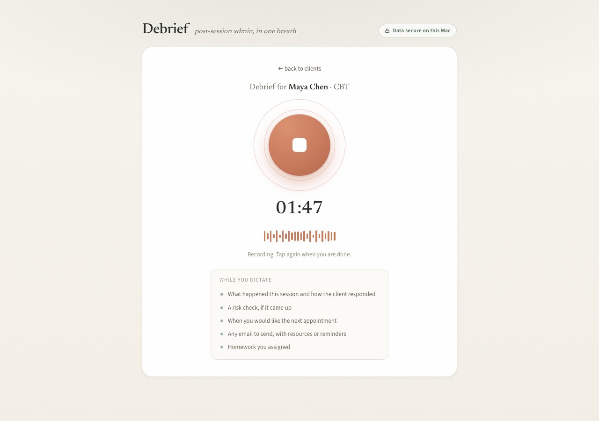
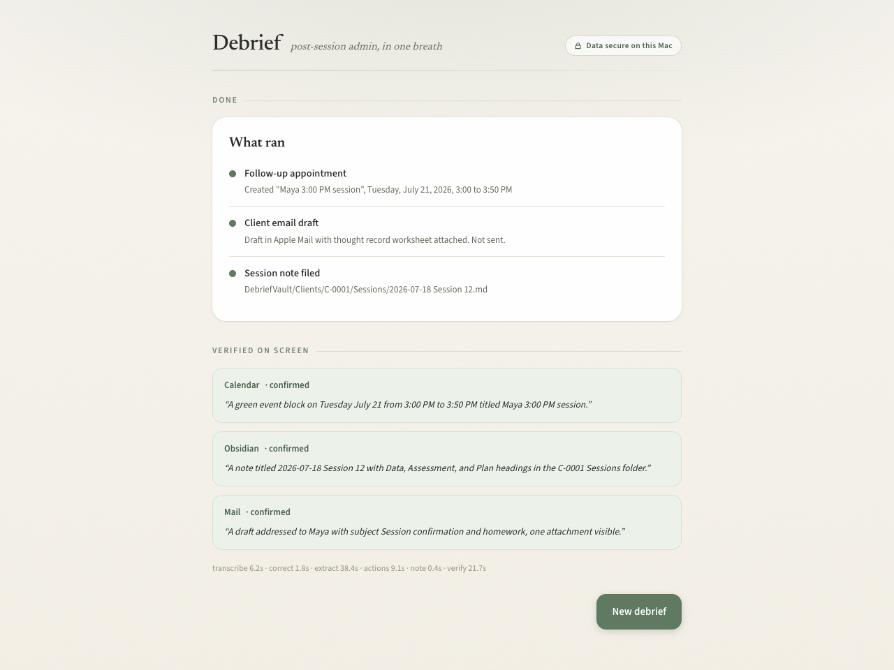

Therapists lose 15 to 30 minutes of admin after every session. Cloud AI scribes
ask them to upload their clients' trauma disclosures to someone else's servers.
On-device Gemma 4. Nothing leaves the Mac.
What it does
One spoken debrief. Four things done.
A therapist talks for 60 to 90 seconds. The agent takes it from there.
1DAP progress note filedGrounded in the transcript, framework-authentic, filed into the Obsidian vault
2Follow-up bookedApple Calendar event created for the next session
3Client email draftedWorksheet attached in Apple Mail, always a draft, never auto-sent
4Verified on screenGemma 4 vision reads the live screen to confirm each action happened

How it works
Deterministic hands, model brain, model eyes.
One local model, Gemma 4 12B QAT, playing three roles.
brain / the plan
A single JSON-schema call extracts the clinical note and the requested actions from the transcript.
eyes / the check
The same model's vision reads screenshots of the live screen and confirms each action landed.
editor / the fix
A glossary pass repairs clinical-term transcription errors: GAD, sertraline, EMDR.
Python does all the date math and a human approves the checklist before anything runs.
The model decides and verifies; deterministic code executes.
Speech-to-text is parakeet-mlx on Apple Silicon. A 10-minute dictation transcribes in seconds, fully offline.
Evidence
We defined success before the demo, then measured it.
Unit testsdates, vault, schemas
54 / 54
Date resolution10 spoken phrasings
10 / 10
Eval checks5 fictional debriefs x 8 automated checks
40 / 40
Full live pipelinesynthesized voice to verified screen, end to end
Passed 2x
Vision verificationCalendar, Obsidian, Mail surfaces
3 / 3
The eval earned its keep: it caught 2 real bugs before the demo, a duplicated
calendar booking and a crash on real client profiles. Both fixed and re-verified.

Live demo
Wi-Fi off. Let's run one.
Pick a client
Speak the debrief
Review the note
Approve the checklist
Watch it verify on screen
Honest next steps
A voice correction turn ("actually, make it 4").
A native SwiftUI app.
A formal privacy and legal review before any real clinical use.